The feel
Desktopcore is the family computer after everyone else has gone to bed. Kyle Seeley, who made Emily is Away, misses "having to sneak down and use the family computer at two in the morning", and says these old interfaces bring back "some of the happiest and saddest memories of growing up".1 Windows 95's default scheme of royal blues, medium greys and a little teal came from what the graphics cards of the day could show, and the people who designed it remember a quieter interface from "a kinder, gentler time".2
It works because the player already knows the interface. Seeley says the chat client "helps draw players into the world and the mechanics",3 and once he had built the messenger, "the underlying game and mechanics just fell into place".4 Horror uses the same familiarity: KinitoPET's assistant starts out cute and helpful, then becomes obsessed with being your best friend and pulls your real desktop folders into its fake Windows XP.5
- beveled
- teal
- double-clickable
- after-school
- too helpful
- slightly haunted
Where it comes from
Windows 95 launched on 24 August 1995 and introduced the Start menu and the taskbar.6 It was designed for 800 by 600 screens and 256 colours, which let its designers give it a more three-dimensional look.2 Windows XP followed on 25 October 2001, and Charles O'Rear's photograph of a green hill, Bliss, became its default wallpaper.7 Games then moved inside these screens: Kyle Seeley's Emily is Away (2015) is told through an AOL Instant Messenger chat,1 Sam Barlow built Her Story's desktop from "part Apple II, part Windows 3.1 and part Windows 98",8 and by 2026 PC Gamer was calling it "the crowded fake OS genre".9
Core elements
Bevels lit from the upper left
Windows bases its 3D look on one imagined light source in the upper left.10 Raised and sunken edges are built from single lines in four system colours: button face, highlight, shadow and window frame.11 On Windows 95, says engineer Chris Guzak, "We used shadows and edges to note all the boundaries."2
Grey windows on a teal desktop
The colours started small. Virginia Howlett's team designed Windows 3.1's colour schemes from 16 colours, whose dark versions most people would call teal, navy and burgundy, and used two greys to make buttons look 3D.12 Windows 95's default of royal blues, medium greys and a little teal came from the limits of the graphics cards of the time.2
Taskbar and Start menu
Every open window gets its own entry on a taskbar that stays on top of other windows, and the Start menu gives users "a single-button home base".13 Behind them sits the wallpaper. XP put a photograph of a green hill there, a stark departure from the abstract designs and plain colours desktops usually had.14
Pixel icons at fixed sizes
Icons come in 16, 32 and 48 pixel sizes, in colours from the system palette, lit from the upper left with a black edge on the bottom and right and dark grey on the top and left.15 XP kept the light but angled its objects, softened their corners and added gradients, outlines and drop shadows.16
Small sans-serif system type
Menus, labels and dialogs use MS Sans Serif at 8 point on Windows 98 and NT 4.0, and title bars use its bold.17 Windows 2000 and XP moved to Tahoma at 8 point.17,18
Story told through software
The game lives inside a program the player already knows. Emily is Away takes the form of an early-2000s instant messenger and Her Story is a search through a fragmented video archive,19 while KinitoPET is told through an early-2000s virtual assistant.5
How to do it
Choose a target era and screen
Choose your target machine first. Windows 95 was designed for 800 by 600 screens and 256 colours, up from VGA's 640 by 480 and the 16 colours of Windows 3.1.2 For Home Safety Hotline, Night Signal studied corporate Windows 95 software, found a straight copy flavourless, and gave its fake OS its own palette, inspired by the "ugly, home-brewed, hacked-together" systems on office computers.20
Build a reusable bevel
A faithful CSS copy of Windows 98 draws its buttons with four inset box-shadows, #ffffff and #dfdfdf on the top and left and #0a0a0a and #808080 on the bottom and right, over a #c0c0c0 face at a minimum of 75 by 23 pixels.21 When a button is pressed, switch to the sunken lines and move its label one pixel down and to the right.11 In a game, draw the bevel once as a small texture and scale it as a nine-slice panel, which keeps the corners unchanged and tiles the edges and centre.22
Add working window behaviour
Raise a window when it is clicked by moving it to the end of the draw order, so it draws on top of its sibling windows.23 Give every window a taskbar button that stays on top, because Microsoft's testers found that beginners thought a minimised window had gone once another window covered it.13 Grey out inactive title bars: the same Windows 98 copy swaps its #000080 to #1084d0 gradient for #808080 to #b5b5b5.21
Draw icons at 32 and 16 pixels
Draw each icon at 32 by 32 and 16 by 16, plus 48 by 48 for large icons, in 16 and 256 colours.15 Start in black and white, light it from the upper left with a black edge on the bottom and right and dark grey on the top and left, and test it on different backgrounds.15 For XP, angle the object and add a drop shadow at 135 degrees, distance 2, size 2, black at 75% opacity.16
Put story beats in the software
Put each story beat where the program would really show it. In Emily is Away you choose a preset reply and then type it out, and the hero rereads, rewords and deletes, the way Seeley does in instant messengers.4 Her Story's database only returns the first five clips for any word, so players have to combine words to reach the later ones.8
Introduce the horror gradually
Be a friendly, working computer first. KinitoPET's assistant starts out cute and helpful before it becomes obsessed with being your best friend.5 Desktop Explorer's haunting starts with corrupted files and only later brings crashes, symbols and faces behind your windows.9
Add room sound and a CRT overlay
For Her Story, Sam Barlow used an old keyboard for the sound effects, panned each key to its place on the keyboard, made the hard drive whirr and skip, and ran the video through two VHS players.8 Home Safety Hotline lays dust and a CRT effect over its desktop, so you feel you are looking at a monitor rather than living inside it.20
Cheat sheet
Do
- Light every control and icon from the upper left.10,15
- Move a pressed button's label one pixel down and to the right.11
- Keep every open window on a taskbar that stays on top, so nothing the player opens gets lost.13
- Give your fake OS its own palette once a straight copy feels flat, as Home Safety Hotline did.20
- Add a modern touch if it helps the story. Emily is Away shows when Emily is typing, which the old messenger never did.3
Avoid
- Bevels on things nobody can click. Microsoft warned against 3D effects on anything that isn't interactive.10
- A carnival of colour. Microsoft's guidelines call too many colours visual clutter,10 and even Hot Dog Stand's designer calls that scheme "a garish choice".12
- Italic and serif type in the interface. Microsoft found both hard to read at low resolutions.10
- Microsoft's logos and artwork. Microsoft itself told designers to keep the Windows flag out of their icons and to check copyright before copying images.16,15
- Opening with the scare. KinitoPET's helper is cute at first, and Desktop Explorer starts with corrupted files before any faces appear.5,9
Tools and tutorials
- 98.css
A faithful Windows 98 design system. Its button and window bevels are worth reading.
- XP.css
The same idea for Luna, with gradients and rounded title bars.
- Godot: NinePatchRect
The node for scaling a bevelled window frame while its corners stay unchanged.22
- Lospec: VGA 16-colour palette
A 16-colour Windows palette to load into a pixel editor.
- PCjs Machines
Run old Windows in a browser, so you can check the real thing while you work.12
Palette
Sampled from the four images above. Click a colour to copy its hex value and load it into the pencil, then draw on the canvas. Nothing is saved, as usual.
Feel the vibe
Listen
The Windows 95 startup sound, by Brian Eno.2 Study how much mood a few seconds can carry.
YouTubePlain, bouncy MIDI. Study how little it takes to sound like an old PC.
YouTubeBright, orchestral and very sure of itself. Study it for a menu theme that sounds like a brand-new computer.
YouTubeUse it to study how KinitoPET's helper works as a character outside the game.
YouTubeFast, cute and overloaded. Play it next to Needy Streamer Overload's pink desktop in the gallery.
YouTube
More references
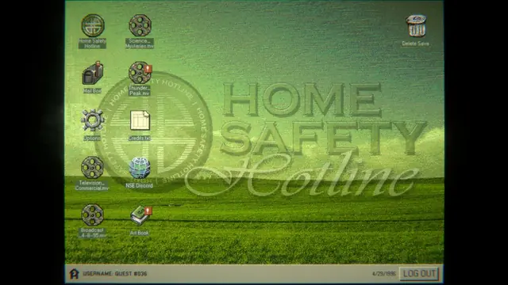
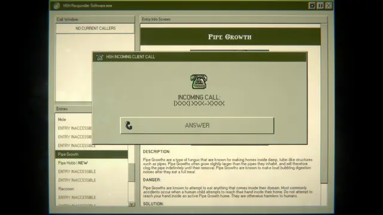
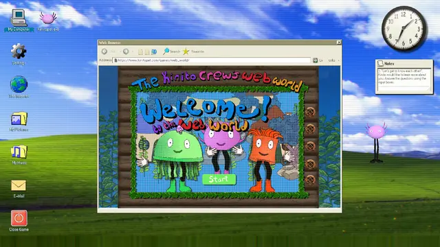
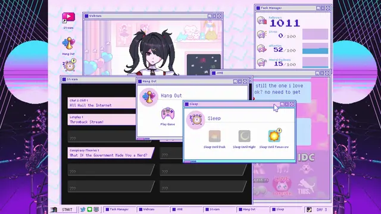
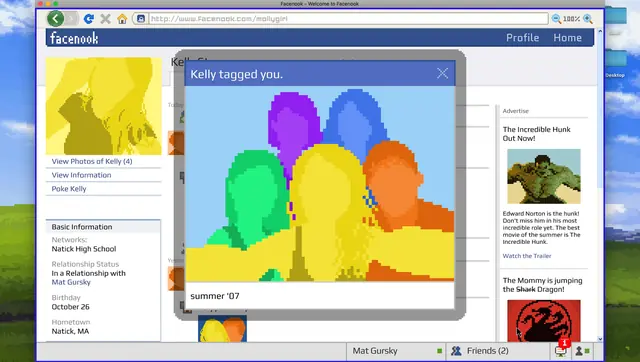
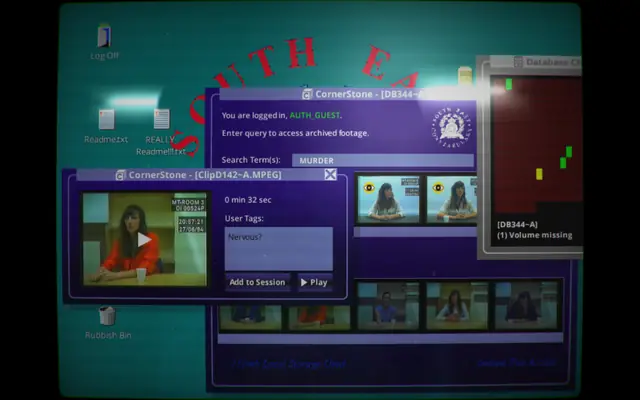
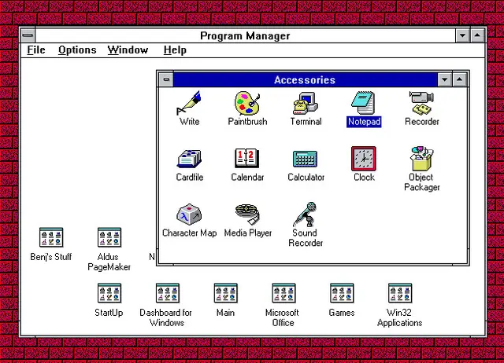
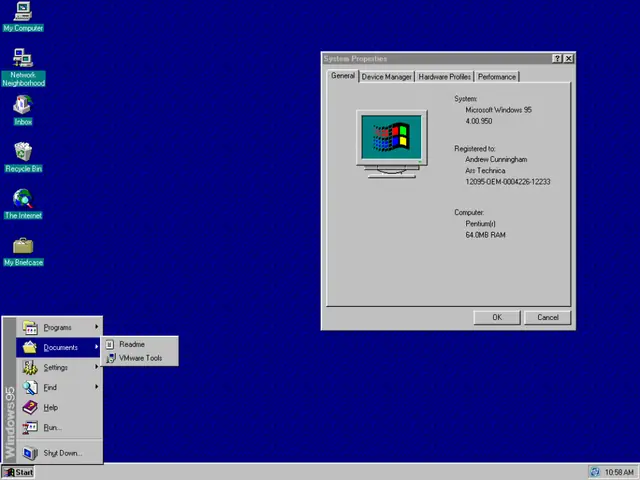
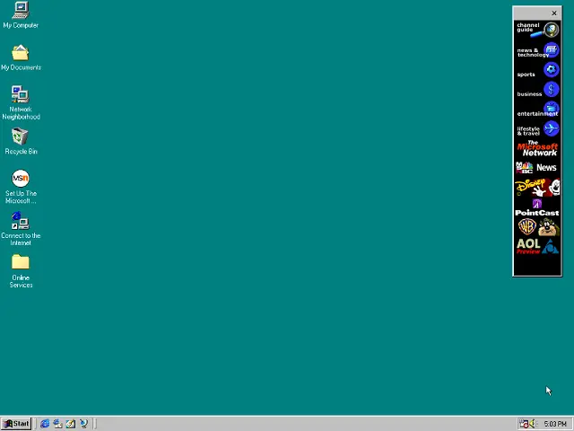
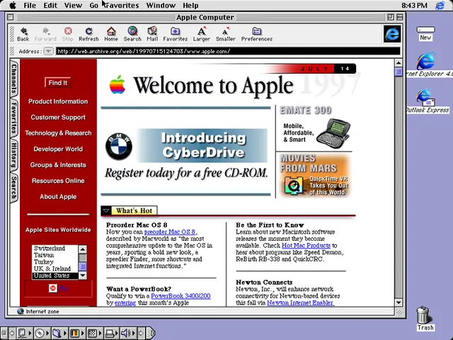
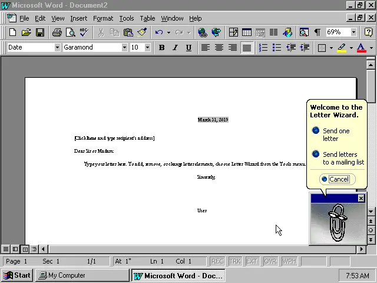
Games
- Emily is Away
A story told in an early-2000s instant messenger,19 released as freeware.1
- Her Story
A search through a police video archive on a desktop that is part Apple II, part Windows 3.1 and part Windows 98.8
- Kingsway
An RPG run from a mock operating system: enemies and traps are pop-up windows, the inventory lives in folders and quests arrive as emails.19
- Hypnospace Outlaw
Set in an operating system that looks like "a vaporwave Geocities".19 Study its 90s home pages and bevelled windows.
- Needy Streamer Overload
Study how far a pink palette can push the desktop look.
- KinitoPET
Psychological horror told through an early-2000s virtual assistant.5 Study its pacing.
- Home Safety Hotline
A creepy '90s call centre built on the look of corporate Windows 95 software.20
Film, art and more
- Windows 95
Introduced the Start menu and the taskbar.6
- Windows XP
Its default wallpaper was Bliss, the green hill.7 Compare its rounded, colourful controls with the grey ones of 95.
- Bliss
The hill itself. Microsoft says more than a billion people have seen it.14
- Office Assistant
Clippy debuted in Office 97. His illustrator blames how he acted, not how he looked, for why people hated him.25
- Hot Dog Stand
Windows 3.1's red and yellow scheme. Its designer says it was never a joke, just "a garish choice".12 Try it in Start, Settings, Display.
Sources
- 1Relive the Torrid Human Dramas of Old AIM Chats in 'Emily Is Away Too'
- 2Rediscovering Windows 95: A look back at Microsoft's design revolution
- 3Exclusive Interview: Kyle Seeley Talks Emily is Away (page 2)
- 4Exclusive Interview: Kyle Seeley Talks Emily is Away
- 5A game where virtual friendship turns nightmarish: KinitoPET's psychological horror experience
- 6Looking back: The 25th Anniversary of Windows 95
- 7The story of the Windows XP 'Bliss' desktop theme, and what it looks like today
- 8Howdunnit: The making of Her Story
- 9Desktop Explorer is a mystery/horror game about the last time when computers were good
- 10Design Specifications and Guidelines: Visual Design, Visual Communication
- 11Design Specifications and Guidelines: Visual Design, Design of Visual Elements
- 12Windows 3.1 included a red and yellow 'Hot Dog Stand' color scheme so garish it was long assumed to be a joke, so I tracked down Microsoft's original UI designer to get the true story
- 13The Windows 95 User Interface: A Case Study in Usability Engineering
- 14Meet the Guy Who Took the Most Famous Desktop Photo of All Time
- 15Design Specifications and Guidelines: Visual Design, Design of Graphic Images
- 16Creating Windows XP Icons
- 17Design Specifications and Guidelines: Visual Design, User Interface Text
- 18Fonts (Windows desktop design guidelines)
- 1915 games with their own simulated operating systems
- 20Something strange in your neighborhood? Call the Home Safety Hotline
- 2198.css stylesheet (style.css)
- 22NinePatchRect
- 23CanvasItem
- 24XP.css theme variables (themes/XP/_variables.scss)
- 25Clippy's Designer Wants to Know Who Got Clippy Pregnant